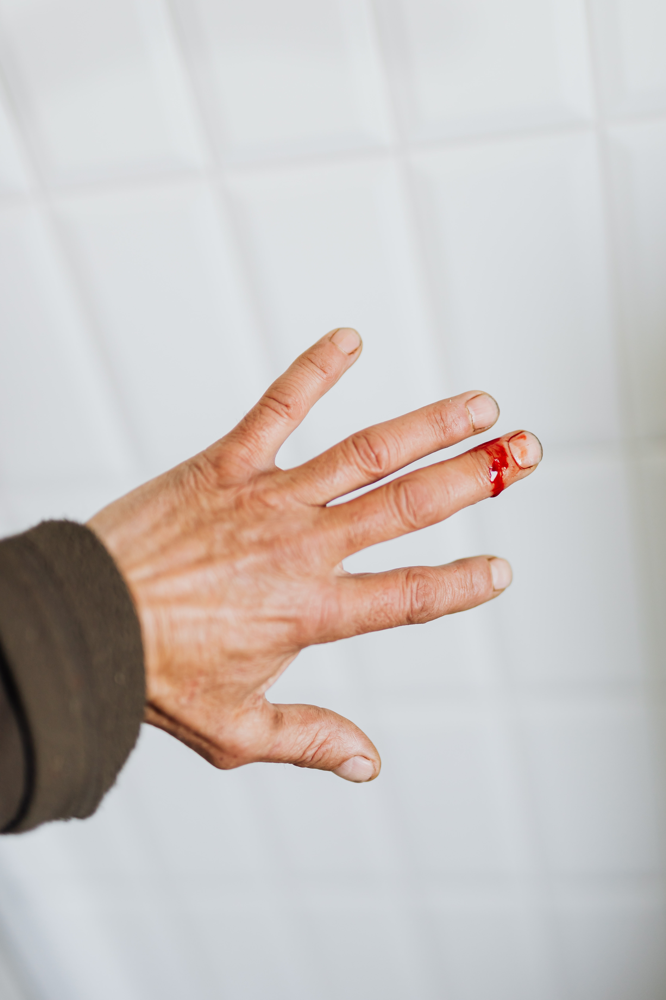
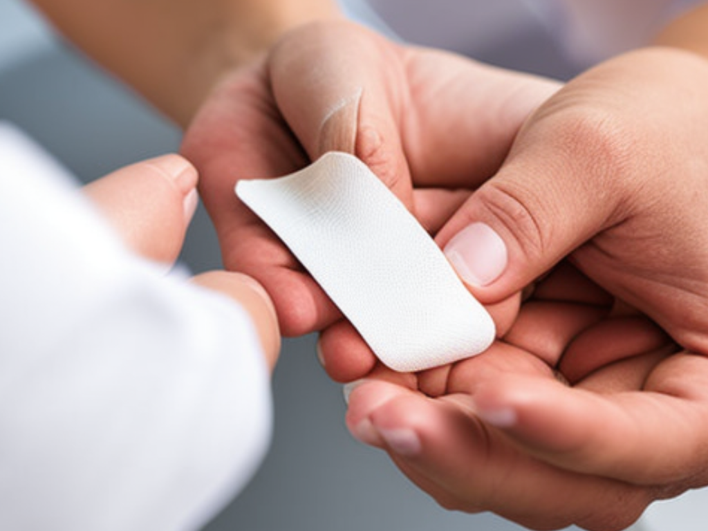

Come si deve intervenire in caso di una ferita profonda per evitare infezioni e facilitare la guarigione?

Ecco a te alcuni consigli:
Pulire la ferita: Lavare la ferita con acqua corrente tiepida e sapone delicato per rimuovere la sporcizia e i batteri.
È importante rimuovere eventuali detriti o oggetti estranei che potrebbero rimanere nella ferita.
Disinfettare la ferita: Applicare una soluzione disinfettante sulla ferita per uccidere eventuali batteri rimasti.
L'uso di alcol o perossido di idrogeno può rallentare la guarigione, quindi è meglio utilizzare un'opzione più delicata come soluzione salina o
clorexidina.
Coprire la ferita: Coprire la ferita con una medicazione sterile o un cerotto per proteggere la ferita e prevenire ulteriori infezioni.
Cambiare la medicazione: Cambiare la medicazione almeno una volta al giorno o più spesso se la medicazione diventa bagnata o sporca.
Monitorare la ferita: Controllare regolarmente la ferita per eventuali segni di infezione come rossore, gonfiore, calore, pus o dolore. Se questi sintomi si presentano, consultare un medico.
Mantenere la ferita pulita e asciutta: Evitare di bagnare la ferita mentre si fa la doccia o il bagno e asciugare delicatamente la ferita dopo averla pulita.
Evitare di toccare la ferita con le mani non lavate o oggetti sporchi: questo può portare a infezioni.
Prendersi cura della propria salute generale: Mangiare una dieta sana, bere molta acqua, riposare adeguatamente e evitare comportamenti a rischio per prevenire infezioni e favorire una rapida guarigione.

Come si deve gestire una persona che sta andando in shock e quali sono i segnali di avvertimento?
Lo shock è una grave condizione medica in cui il flusso sanguigno e l'ossigeno sono ridotti a livello critico nell'organismo, causando
un'insufficienza di ossigeno ai tessuti vitali. È importante agire rapidamente per prevenire danni permanenti o persino la morte.
I segnali di avvertimento che qualcuno potrebbe essere in shock includono:
Pelle fredda, pallida e umida
Sudorazione profusa
Respirazione rapida e superficiale
Battito cardiaco rapido e debole
Confusione mentale o irritabilità
Nausea o vomito
Riduzione della quantità di urine prodotta
Se si sospetta che qualcuno stia andando in shock, è importante agire immediatamente. Ecco alcuni suggerimenti su come gestire una persona che sta andando in shock:
Allertare il personale medico: Chiamare immediatamente i soccorsi o portare la persona in ospedale.
Mantenere la persona calma e a riposo: Posizionare la persona in posizione supina con le gambe sollevate leggermente sopra il livello del cuore, se possibile.
Mantenere la persona al caldo: Coprire la persona con una coperta o un capo di abbigliamento per mantenere il calore corporeo.
Monitorare i segni vitali: Misurare la frequenza cardiaca e respiratoria e la pressione sanguigna della persona, e tenere traccia della quantità di urine prodotta.
Non dare da bere o da mangiare: La persona non dovrebbe mangiare o bere nulla finché non viene valutata da un medico.
In generale, è importante agire rapidamente se si sospetta che qualcuno stia andando in shock, e chiamare immediatamente i soccorsi o portare la persona in o
Quali sono i principali fattori di rischio e le misure preventive per prevenire gli incidenti domestici e intervenire tempestivamente in caso di emergenza?
Le cause possono essere molteplici e degli incidenti domestici possono accadere a tutti, ecco alcune misure di prevenzione:
Mantenere la casa pulita e ben organizzata, con gli oggetti disposti in modo ordinato e il pavimento libero da ostacoli.
Installare una buona illuminazione in casa, con luce naturale e artificiale.
Fare attenzione quando si usano scale o si lavora su un'altezza elevata.
Sostituire o riparare immediatamente oggetti rotti o non funzionanti.
Conservare i prodotti chimici e gli materiali infiammabili in modo sicuro e corretto.
Utilizzare correttamente le apparecchiature elettroniche.
In caso di emergenza, è importante intervenire tempestivamente. Ecco alcune azioni che possono essere adottate in caso di emergenza:
Mantenere la calma e chiamare subito i soccorsi.
Se possibile, spegnere la fonte dell'emergenza, ad esempio un incendio o una perdita di gas.
Evacuare rapidamente la casa, se necessario.
Assicurarsi che gli altri membri della famiglia o gli ospiti siano al sicuro.
Fornire cure di primo soccorso, se necessario, come la RCP (Rianimazione Cardio Polmonare) o il controllo del sanguinamento.